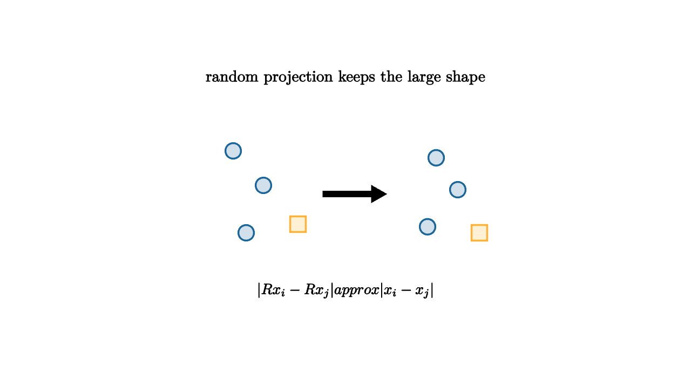

High-dimensional data can feel impossible to picture. A document may have one coordinate for every word. A genome may have thousands of measurements. A user profile may live in a feature space that no one can draw. Yet many questions depend on rough geometry: which points are close, which points are far, and which groups are separated.
Random projection is the surprising claim that a carefully scaled random map can keep much of that geometry. Choose a random matrix $R$ with $k$ rows and $d$ columns, then send
When $k$ is large enough, pairwise distances among a finite set of points are approximately preserved.

source
let soft = |col, amount| lerp(WHITE, col, amount)
mesh scene = [
center{1.35u} Text("random projection keeps the large shape", 0.66),
center{1.3l + 0.5u} fill{soft(BLUE, 0.2)} stroke{BLUE, 2} Circle(0.09),
center{0.95l + 0.1u} fill{soft(BLUE, 0.2)} stroke{BLUE, 2} Circle(0.09),
center{1.15l + 0.45d} fill{soft(BLUE, 0.2)} stroke{BLUE, 2} Circle(0.09),
center{0.55l + 0.35d} fill{soft(ORANGE, 0.2)} stroke{ORANGE, 2} Square(0.18),
stroke{BLACK, 3} Arrow(0.25l, 0.45r),
center{1.05r + 0.42u} fill{soft(BLUE, 0.2)} stroke{BLUE, 2} Circle(0.09),
center{1.3r + 0.05u} fill{soft(BLUE, 0.2)} stroke{BLUE, 2} Circle(0.09),
center{0.95r + 0.38d} fill{soft(BLUE, 0.2)} stroke{BLUE, 2} Circle(0.09),
center{1.55r + 0.45d} fill{soft(ORANGE, 0.2)} stroke{ORANGE, 2} Square(0.18),
center{1.12d} Tex("\\|Rx_i-Rx_j\\| \\approx \\|x_i-x_j\\|", 0.62)
]The Johnson-Lindenstrauss lemma gives the famous guarantee. For $n$ points and distortion $\varepsilon$, a target dimension on the order of
is enough to preserve all pairwise distances up to a factor of roughly $1\pm\varepsilon$. The dependence on $\log n$ is the headline. The original dimension $d$ can be enormous, while the projected dimension depends mainly on how many points must be preserved.
source
let soft = |col, amount| lerp(WHITE, col, amount)
"Many Coordinates"
mesh scene = [
center{1.3u} Text("a point can have thousands of coordinates", 0.62),
center{0r} fill{soft(BLUE, 0.14)} stroke{BLUE, 2} Rect([2.4, 0.45]),
stroke{LIGHT_GRAY, 1.5} Line(0.9l + 0.23d, 0.9l + 0.23u),
stroke{LIGHT_GRAY, 1.5} Line(0.45l + 0.23d, 0.45l + 0.23u),
stroke{LIGHT_GRAY, 1.5} Line(0r + 0.23d, 0r + 0.23u),
stroke{LIGHT_GRAY, 1.5} Line(0.45r + 0.23d, 0.45r + 0.23u),
stroke{LIGHT_GRAY, 1.5} Line(0.9r + 0.23d, 0.9r + 0.23u)
]
play Fade(0.8)
"Random Directions"
scene = [
center{1.3u} Text("measure shadows on random directions", 0.62),
stroke{ORANGE, 3} Arrow(1.5l + 0.55d, 1.45r + 0.65u),
stroke{GREEN, 3} Arrow(1.5l + 0.05u, 1.45r + 0.25d),
stroke{PURPLE, 3} Arrow(1.2l + 0.8u, 1.2r + 0.75d)
]
play Write(0.9)
"Sketch"
scene = [
center{1.3u} Text("the sketch is smaller and still geometric", 0.62),
center{0r} fill{soft(ORANGE, 0.16)} stroke{ORANGE, 2} Rect([1.0, 0.75]),
center{1.05d} Tex("k \\ll d", 0.76)
]
play Trans(0.8)Why does randomness help? A random direction is unlikely to align perfectly with any one bad feature. A collection of random directions spreads measurement error across many coordinates. Individual distances wobble, but concentration of measure keeps the wobble small when enough random measurements are used.
Random projections are practical. They can speed up nearest-neighbor search, compress features before clustering, create sketches for streaming data, and reduce memory use before a more expensive algorithm. They are also conceptually useful because they show that high dimension is not always as fragile as it feels. Some large-scale geometry is redundant.
The guarantee is finite-set geometry. It says that a chosen collection of points keeps its pairwise distances. It does not say every possible future point is preserved equally well. It also does not choose interpretable coordinates. A random projection is usually a computational sketch, while PCA is often an explanatory coordinate system.
The moral is precise: when the task needs distances more than meanings, random projections can be a disciplined compression. They trade human-readable axes for speed and geometry.